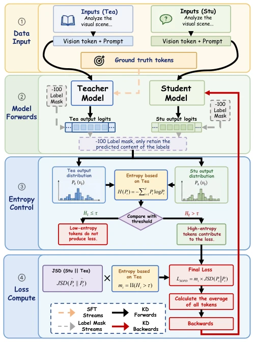
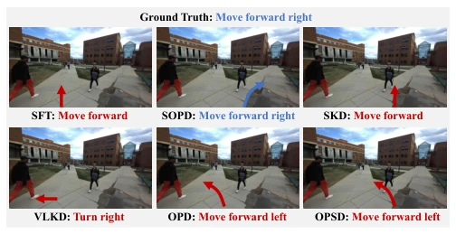
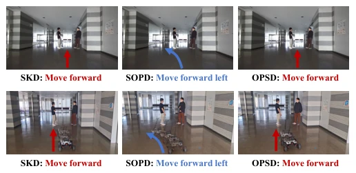
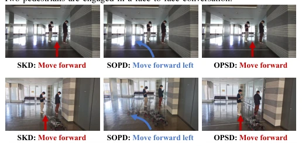

This paper attempts to use "distillation" to embed the social navigation capabilities of large models into small models, a pragmatic approach. After all, running large VLMs on robots is indeed like driving a tank. SOPD filters key tokens via entropy values, attempting to solve the traditional distillation problem of indiscriminate treatment. However, using entropy to judge "social importance" is somewhat risky; sometimes the teacher model is very certain about a dangerous action (low entropy), but this is exactly what the student needs to learn most, yet the paper does not elaborate on how to distinguish between "deterministic safety" and "deterministic danger". Additionally, an end-to-end latency of 2.74 seconds is still too slow for real-time obstacle avoidance, making the claim of "real-time deployment" somewhat of a stretch. But running successfully on Scout Mini at least proves the lightweight direction is correct, more reliable than relying purely on RL parameter tuning. This "selective learning" is theoretically very appealing, but whether the actual effect truly outperforms direct fine-tuning requires more long-sequence test verification.
When navigating in human environments, embodied intelligence requires more than just obstacle avoidance; it must understand "social nuances". Existing large VLMs, although strong in reasoning, are computationally too heavy to be deployed on edge devices [7]. Lightweight models lack social reasoning capabilities. Knowledge distillation is a compromise, but traditional On-Policy Distillation (OPD) often uses Reverse KL divergence, which has mode-seeking characteristics, easily leading to loss of action diversity and triggering mode collapse [8][9]. Furthermore, OPD usually treats all tokens equally, ignoring numerous low-entropy routine actions like "straight corridors" in navigation, causing gradients to be drowned out, and the model fails to learn key social avoidance behaviors. Existing methods lack a distinction mechanism for token social importance, making it difficult to efficiently transfer social common sense. Especially when the teacher distribution exhibits high entropy or multimodality, gradient signals become unstable, further exacerbating training difficulties.
The SOPD framework consists of four steps: first, freeze the large VLM after SFT as the Teacher; the Student generates a response sequence based on the current policy; the Teacher evaluates the Student output to obtain a token-level probability distribution; finally, filter key tokens based on entropy values for distillation. The core innovation lies in Entropy-controlled Token Selection: calculate the entropy of the Teacher distribution, set a threshold, compute loss only for high-entropy (socially ambiguous) tokens, and suppress gradient interference from low-entropy (routine motion) tokens. The loss function adopts Temperature-controlled Jensen-Shannon Divergence (JSD), rather than traditional KL divergence, to balance distribution alignment and gradient stability. In specific implementation, the Teacher uses Qwen3-VL-8B, and the Student is Qwen2.5-VL-3B. This mechanism forces the student model to focus on social decision areas such as "yielding" and "queuing", rather than mechanically repeating straight logic, achieving the transfer of social reasoning capabilities from large models to small models. Through the mask mechanism, redundant computation is effectively reduced, improving training efficiency.

Fig. 1. Overview of SOPD. The proposed SOPD framework takes text–image pairs from social navigation datasets as input. After supervised fine-tuning, the teacher VLM is frozen, while the student interacts with the environment and generates responses under its current policy. The frozen teacher then evaluates the student responses to obtain token-level probability distributions. Based on these distributions, Entropy-controlled token selection then identifies socially informative decision tokens for selective distillation. The resulting SOPD loss is backpropagated to update the student model.
Tested on SNEI and MUSON datasets, comparing against baselines such as SFT, SKD, VL-KD, OPD. Metrics include Action Accuracy (Acc), Perception Cosine Similarity (Per-cos), and Reasoning Cosine Similarity (Rea-cos). SOPD is optimal on all metrics; on SNEI, Acc reaches 0.889, significantly higher than OPSD 0.026. Ablation experiments prove entropy filtering and JSD loss are both effective, with the combination yielding the maximum improvement. Real robot deployment on Scout Mini robot; in dialogue and queuing scenarios, SOPD can generate more reasonable detour paths, while baseline models tend to go straight. Although inference latency is about 2.74 seconds, it proves lightweight models possess social compliance, superior to pure imitation learning. Figure 3 and Figure 4 demonstrate qualitative advantages in real social scenarios, indicating that this method is more robust in complex interpersonal interactions.

Fig. 2. Visual comparison with other methods. SOPD can better capture the spatial relationship between the robot and pedestrians and generate more accurate socially compliant navigation decisions.

Fig. 3. Qualitative comparison in a real-world conversational scenario. Two pedestrians are engaged in a face-to-face conversation.

Fig. 4. Qualitative comparison in a real-world queuing scenario. Two pedestrians are standing in line and waiting in front of the robot.